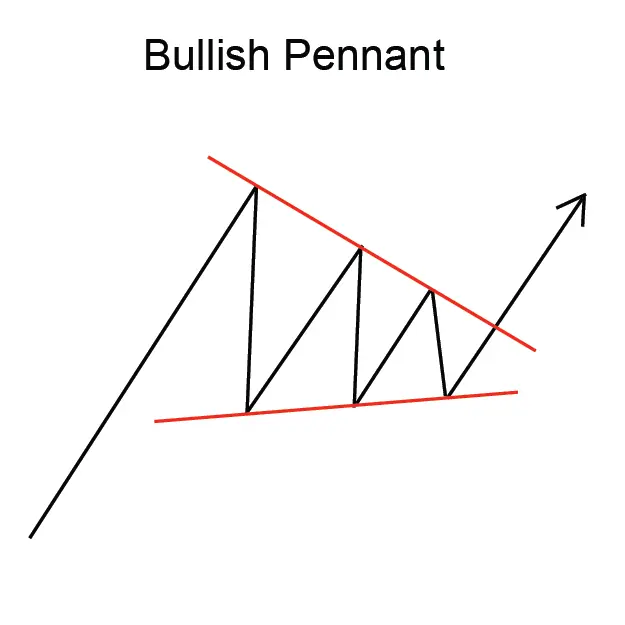
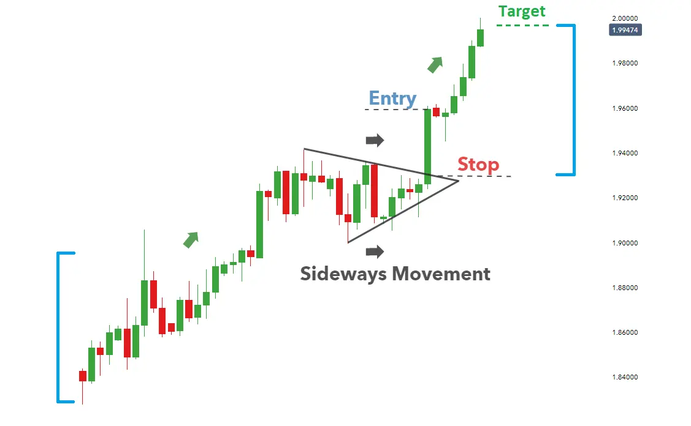

বুলিশ প্যান্ট ফ্ল্যাগ প্যাটার্ন হল একটি আপক্ট্রেন্ডের ধারাবাহিকতা চার্ট প্যাটার্ন যা
দুটি উত্থানের মধ্যে একটি সংক্ষিপ্ত সংহতকরণের পুনঃমূল্যায়ন দ্বারা গঠিত হয়।
প্যাটার্নটি প্রায়শই একটি পতাকা বা পতাকাদণ্ডের মতো দেখায়, যার ফলে এর নাম।
বুলিশ প্যান্ট ফ্ল্যাগ প্যাটার্নটি একটি শক্তিশালী আপট্ট্রেন্ডের ইঙ্গিত দেয় এবং
ট্রেডাররা প্রায়শই এটিকে ট্রেডিংয়ের সুযোগ হিসাবে ব্যবহার করেন। প্যাটার্নটিতে
প্রবেশ করার জন্য, ট্রেডাররা প্রায়শই পতাকাদণ্ডের উচ্চতার সমান দূরত্বে
পতাকাটির নীচে একটি 'ব্রেকওয়ে' সন্ধান করেন।
পতাকাদণ্ডের দৈর্ঘ্য হল পতাকাটির নীচ থেকে পতাকাদণ্ডের শীর্ষে উচ্চতার
পরিমাণ। পতাকাটির প্রস্থ হল পতাকাদণ্ডের শীর্ষ থেকে পতাকাটির নীচে নিন্নমুখী
ভাঙা পর্যন্ত সময়ের ব্যবধান।
বুলিশ প্যান্ট ফ্ল্যাগ প্যাটার্নটি একটি নির্ভরযোগ্য ট্রেডিং প্যাটার্ন নয়, তবে এটি
একটি শক্তিশালী আপষ্ট্রেন্ডের ইঙ্গিত দেয় এবং ট্রেডাররা প্রায়শই এটিকে
ট্রেডিংয়ের সুযোগ হিসাবে ব্যবহার করেন।
